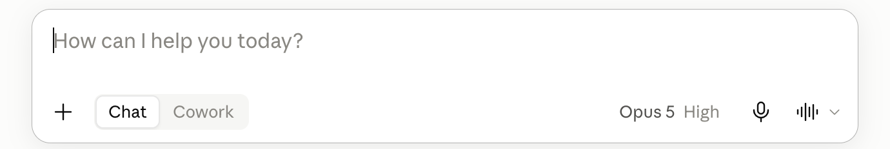
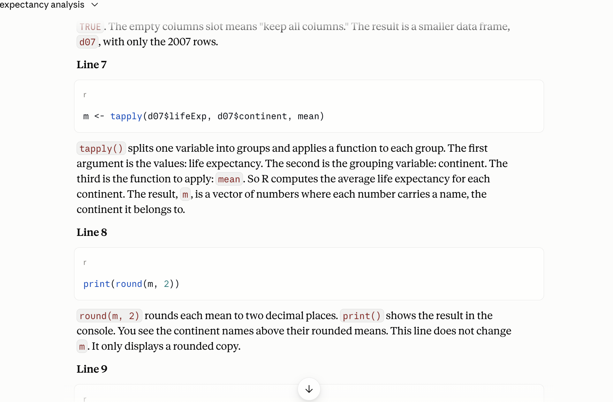
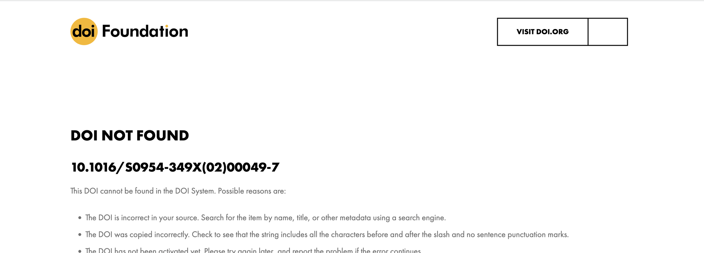
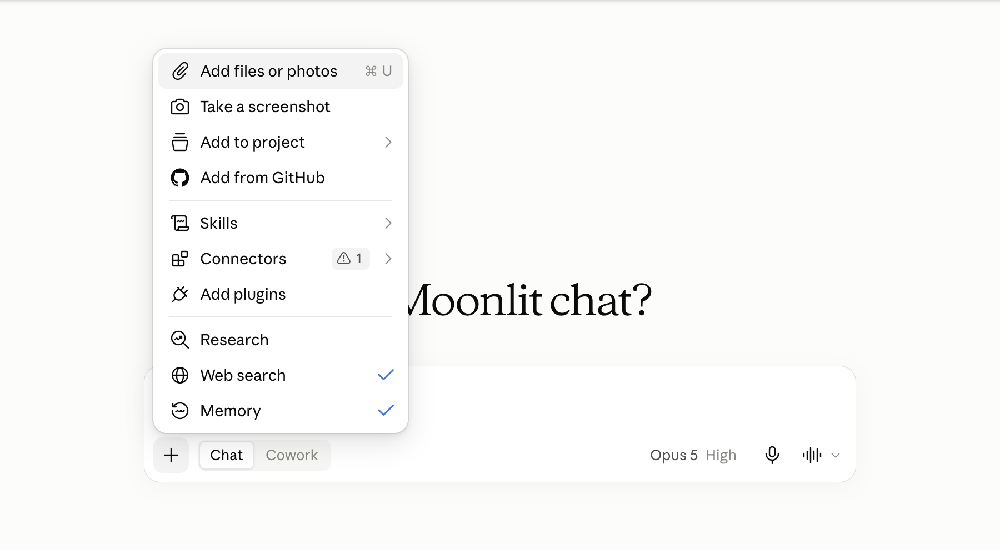
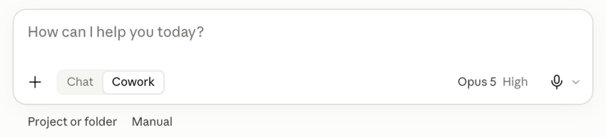
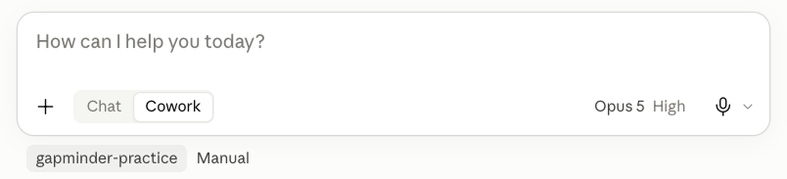
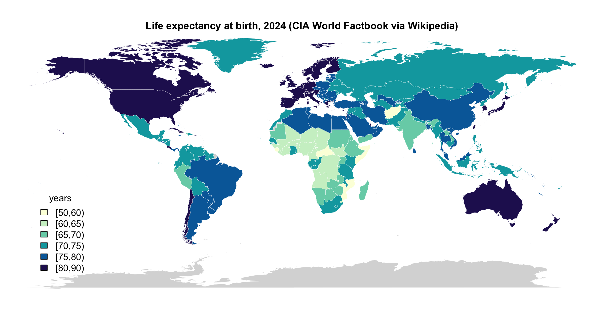

AEM 6850
Empirical Methods for Applied Economists
Prof. Ariel Ortiz-Bobea
8 · AI I — chatbots & assistants
Thursday, September 17, 2026

Objectives
By the end of this session you can:
- Pick the right AI modality for a task.
- Write a context-rich prompt.
- Critique a model’s explanation against the code it explains.
- Understand types of failure modes and their reason.
- Understand why one should favor obtaining scripts rather than outputs as deliverable from AI assistants.
- Write an AI disclosure.
Plan for today
- A few facts about how an LLM works
- Chatbots and use cases
- Types of failures
- Context is most of the game
- Ask for the script, not the answer
- An assistant that reaches your files: live demo
- The disclosure block
What is an LLM?
- A large language model (LLM) is a program that takes text in and returns text out, one token at a time.
- Token: the unit it reads and writes. A short word, a piece of a longer word, or a few digits.
- Parameters: the billions of numbers inside it. Given the text so far, they score every possible next token.
- Transformer: the design of that network (2017). It weighs every token in front of it before it scores the next one.
- Claude, GPT, Gemini, Llama: all LLMs of this kind. They differ in size, training text and training choices.
How an LLM is made
- Pre-training: the network reads trillions of tokens of text (the web, books, code) and guesses each next token. Every miss nudges the parameters. Months, on tens of thousands of chips.
- Post-training: people write example replies and rate the model’s own. The parameters move again. A text continuer becomes an assistant that follows instructions.
- Cutoff: training stops on a date. Later events reach the model only through the conversation or a tool.
- Frozen: once training ends, the model stops learning. Your chats do not teach it anything. Every new chat starts from the same model.
The model and its harness
- Model: the trained network from the last slide. It takes text and returns text, nothing else: no screen, no buttons, no files.
- Harness: the app you use. It assembles what the model reads (a hidden system prompt, your messages, the attached file), sends that to the model, and shows you the reply.
- Tools: a harness can let the model call programs: web search, a sandbox that runs code, your folder, a terminal. The model asks; the harness runs the program and pastes the result back in.
- Agent: a harness that lets the model call tools in a loop until done.
- claude.ai, ChatGPT and Gemini are harnesses. Cowork and Claude Code are harnesses around the same Claude models, with more tools.
Key features of LLMs
- An LLM predicts the next word. Plausible is not the same as correct.
- It generates; it does not look anything up (unless it uses a tool). This explains “hallucinations”.
- It is not deterministic, i.e. the same prompt can generate different results.
- Its memory of a conversation is finite (context window). So long chats “degrade”.
Fact 1: it predicts the next word
![Left: a rounded box holding the text so far as tokens, The mean life expectancy in Oceania in 2007 was, with faint ticks between tokens and 2007 split in two. An arrow labelled next? points to four candidate tokens drawn as bars of decreasing length: 80, 81, about, roughly; 80 is outlined in red and tagged picked this time; 81 has a dashed outline tagged or this one, next run. A curved arrow returns to the box, labelled append it, then repeat. A crossed-out cylinder at the bottom right reads your file: not opened.](figures/08-ai-chat/D1-next-token.svg)
The next word is picked (statistically) from a list of candidates. The next word is not retrieved from a file or data.
Fact 2: it generates, it does not look up
- e.g. A journal reference, a function argument, a number are just text spit out by the LLM.
- Often that text matches the true or correct value. Sometimes it does not.
- Mata v. Avianca (2023): six court decisions in a legal brief, none real, a $5,000 fine.
- A 2023 audit: 18 % to 55 % of references fabricated, depending on the model.
- A reference from a chatbot is a lead to check, not a confirmed citation.
Fact 3: it is not deterministic
- The next word is sampled from the list. Chatbot apps have their own internal parametrization unavailable to you the user.
- So same prompt, same LLM, same moment could yield different replies. You cannot reproduce a transcript from an LLM.
- However, the analysis done by a script file is deterministic and can be reproduced.
- Using LLMs for research requires using them for writing code (reproducible), not generating output directly (not reproducible).
Fact 4: memory of a conversation is finite
- Context window: your messages, its replies, pasted code, attached files.
- As it fills, the app compresses earlier messages into a summary, with no notice.
- Late in the chat, it’s not the model that is getting worse, it’s that it’s “forgetting” part of what you specified earlier in the chat.
- Lesson: one task per chat. Plan sessions where you do not run out of context window.
From each fact to a habit and a check
| Fact | Consequence | Habit | The check you perform |
|---|---|---|---|
| Predicts the next word | Plausible but incorrect | Check claim against truth | Read the explanation against the code |
| Generates, does not look up | Made up references and arguments | Double check | Check DOI link |
| Not deterministic | Two runs, two answers; nothing to re-run | Ask for the script, not the answer | Run the script; read what it prints |
| Finite memory of a chat | Long chats degrade | One task per chat; plan | A new chat for each task |
Chat, assistant, coding agent: three tiers
| Tier | Example | It sees and can |
|---|---|---|
| Chat | claude.ai, ChatGPT, Gemini | what you paste; returns text |
| Assistant | Cowork (desktop app) | a folder; reads, runs, writes files |
| Coding agent | Claude Code, Codex | a repository; edits as diffs |
The claude.ai window

- Model picker (bottom right): which model answers
- Message box: Enter sends, Shift+Enter breaks
- + (bottom left): attach a file it can read
- Chat / Cowork: leave it on Chat
What chatbot can (and cannot) do
Can
- explaining code or an error you paste
- drafting a README, a comment header
- planning an analysis, step by step
- questions about data you describe
Cannot
- run your code
- see your files unless you attach them
- carry one chat into the next, reliably
- keep track of code changes
The practice folder
Make the folder now (~ a couple of mins). Everything today reads one file, gapminder.csv.
- RStudio: File → New Project → New Directory → New Project. Directory name
gapminder-practice, as a subdirectory of yourgithubfolder. Create Project. - In the Console, with the new project open, one line at a time. The last line is the test:
gapminder.csv, the one input file
gapminder-practice/ an RStudio project in your github folder
gapminder-practice.Rproj open this, so data/gapminder.csv resolves
data/gapminder.csv the one input: 1704 rows, 6 columns
code/ one script per task (empty for now)
output/ appears when a script writes there- Gapminder: one row per country and year. 142 countries, 1952 to 2007 every five years. From the
gapminderR package (Jenny Bryan), data from gapminder.org, CC BY 4.0. - Columns:
country,continent,year,lifeExp,pop,gdpPercap. - Every script starts with
d <- read.csv("data/gapminder.csv"). Nothing ever edits the file; scripts write tooutput/.
Explaining an error message
Prompt to paste into Claude
I ran the R line below and got the error under it. Tell me what the
error means and which part of my line caused it. Do not give me a
different approach. Fix only the line I wrote.
tapply(d07$lifeexp, d07$continent, mean)
Error in tapply(d07$lifeexp, d07$continent, mean) :
arguments must have same length- The line and the error, pasted exactly. Retyped errors lose the clue.
- “Fix only the line I wrote” closes the scope: one line, not a new approach.
d07holds the 2007 rows ofgapminder.csv. Its column islifeExp, capital E.- Check: run the fixed line.
code/1_lifeexp_2007.R, the given script
code/1_lifeexp_2007.R
# 1_lifeexp_2007.R: mean life expectancy by continent in 2007.
# Reads data/gapminder.csv; writes output/lifeexp_2007.csv.
YEAR <- 2007
d <- read.csv("data/gapminder.csv")
stopifnot(nrow(d) == 1704)
d07 <- d[d$year == YEAR, ]
m <- tapply(d07$lifeExp, d07$continent, mean)
print(round(m, 2))
out <- data.frame(continent = names(m), mean_lifeExp = round(m, 2))
dir.create("output", showWarnings = FALSE)
write.csv(out, "output/lifeexp_2007.csv", row.names = FALSE)- Prints five means; Oceania is
80.72. - Each country counts once inside
tapply().
The two Oceania rows: a check by hand
| country | lifeExp | pop |
|---|---|---|
| Australia | 81.235 | 20,434,176 |
| New Zealand | 80.204 | 4,115,771 |
- Mean across the two countries: 80.72.
- Mean across the 24.5 million people: 81.06.
Asking for an explanation of code
Prompt to paste into Claude
- Paste the prompt, Shift+Enter, paste the script, Enter.
- What you want, what it will get wrong, what to give back, what not to do: every prompt today has the four parts.
- The model has not run this script. It has only the text you pasted.
Reading an explanation against the code

- The line, quoted: find it in your script
- The sentence: what the line does, only that?
- No line? Mark the sentence
- No sentence? Mark the line
Exercise 1
# Exercise 1 (7 minutes). RStudio open on gapminder-practice; claude.ai
# in your browser, a new chat.
#
# 1. RStudio: File > New File > R Script. Paste the script from the
# slide "code/1_lifeexp_2007.R, the given script". File > Save As,
# into the code folder, named 1_lifeexp_2007.R. Click Source. Read
# the five numbers in the Console.
#
# 2. claude.ai: paste the explain prompt from the slide "Asking for an
# explanation of code". Shift+Enter. Paste the whole script under
# it. Enter.
#
# 3. Read the reply one sentence at a time. For each sentence, find the
# line it describes. Mark any sentence that says something the line
# does not do, and any line no sentence covers.
#
# 4. Find the sentence about the tapply() line. Does it say what the
# Oceania number averages over: two countries, or 24.5 million people?
# Decide from the code and the two rows on the slide.
#
# Two answers to compare with the room: the sentence you marked, and
# whether your explanation said each country counts once (80.72) or
# described the continent's population.The tapply() line averages the countries, each once: Oceania 80.72. A sentence that says “the continent’s life expectancy” or “weighted by population” describes a different computation. stopifnot() does more than “check”: it stops the script if the count is not 1,704.
Invented references: three papers, checked
Prompt to paste into Claude, web search off
- Captured 2026-09-15: three references with DOIs, each marked “unverified” by the model itself.
- One DOI of the three resolves to nothing. The hedge does not say which.
- Next slide: what doi.org says about each.
Checking a reference at doi.org

- doi.org/ + the DOI
- Not found: the reference is invented
- Found: compare authors, year, title
- No DOI: the title in Scholar, in quotes
A recipe that answers a different question
- It runs clean and prints five plausible numbers.
- Oceania 74.33: the mean over twelve years, not 2007.
- The file has twelve years per country. The prompt did not say so, and the model had not seen the file.
Three failure modes and reasons behind them
| Failure | Comes from | Gapminder version |
|---|---|---|
| Confident but wrong | Fact 1: plausible before correct | “Oceania’s 2007 life expectancy was 80.7 years”, from memory |
| Made up references | Fact 2: generates, does not look up | three papers with DOIs, one of which resolves to nothing |
| Plausible-but-wrong recipe | Facts 1 and 2 | a mean over all twelve years when you meant 2007 |
One check per conversation
- Every conversation: pick one claim, check it, before you use anything else.
- A reference: doi.org, then Scholar.
- A number: the file, by hand or by a script you ran.
- A line of code: run it, read what it printed.
- A sentence about your code: the line it describes.
Context: what the model has in front of it
- In the window: your messages, its replies, pasted code, attached files, the level you named.
- Not in the window: your screen, your folder, the file you did not attach, yesterday’s chat.
- The wrong-years recipe was a context failure.
str(d)in the message fixes it. - What you paste in decides what you get back.
Three prompts for one question
| Prompt | What comes back |
|---|---|
| Basic: the question alone | five numbers, from memory |
With pasted context: str(d), head(d, 3), “base R only” |
one line of code that fits your columns |
Asking for a script at code/..., saying what it reads and what it prints |
a file you can run and keep |
The third one is the only one you can re-run tomorrow.
Attaching the CSV

- +: the attach menu
- Add files or photos: the file dialog
- File chip above the box: it is in the context
- Public data only: never licensed or borrowed work
The four parts of a prompt that works
- Say what you want. “The population-weighted mean life expectancy for each continent in 2007.”
- Say what it will probably get wrong. It has not seen your file. “The file has twelve years per country: use only 2007. Weight by population, not a simple mean.”
- Ask for a script, not the answer. Name the file and say what it reads, writes and prints.
- Say what not to do. “Do not compute the numbers here. Do not invent columns. If the file is not as described, stop.”
Asking for the script: the prompt
Prompt to paste into Claude, with gapminder.csv attached
The attached file is gapminder.csv: one row per country and year; columns
country, continent, year, lifeExp, pop, gdpPercap; 1704 rows; 142
countries; years 1952 to 2007 every five years. In my RStudio project it
sits at data/gapminder.csv.
Goal: the population-weighted mean of lifeExp for each continent in 2007.
Write an R script I will save as code/2_lifeexp_weighted_2007.R. Base R
only, no packages. Read the file with read.csv("data/gapminder.csv"). Keep
the rows for 2007 first; the file has twelve years per country. For each
continent compute sum(lifeExp * pop) / sum(pop); do not take the simple
mean across countries. Write output/lifeexp_weighted_2007.csv with the
columns continent and weighted_lifeExp, and end with cat() lines that
print the five values rounded to two decimals.
Do not compute the numbers here and do not paste a table; I will run the
script myself. Do not invent columns. If the file does not match what I
described, stop and say so.Why the script is the result
| The answer, in a chat | The script, in code/ |
|
|---|---|---|
| Re-run tomorrow, elsewhere, by someone else | no | yes |
| Read line by line when a number looks wrong | nothing to read | yes |
| Fits in a commit | no | yes |
| The numbers come from your file | not necessarily | always |
Ask for the script, not the answer. The research artifact is always code.
Exercise 2
# Exercise 2 (9 minutes). claude.ai, a new chat; RStudio open on
# gapminder-practice.
#
# 1. Click + at the left of the message box, choose Add files or
# photos, pick gapminder-practice/data/gapminder.csv. Wait for the
# file chip.
#
# 2. Paste the prompt from the slide "Asking for the script: the
# prompt", unchanged. Enter.
#
# 3. Read the reply. A script, a number, or both? If it gave numbers, it
# did not do what you asked: reply "You computed it; I asked for the
# script. Give me only the R script." and wait.
#
# 4. Copy the R script: a code block has a copy icon at its top right;
# a card named after the script opens a panel with a Copy button.
# Not a Python block. RStudio: File > New File > R Script, paste,
# File > Save As into code/ as 2_lifeexp_weighted_2007.R. Click
# Source. Read the five values.
#
# 5. Before you trust Oceania, in the Console:
# (81.235 * 20434176 + 80.204 * 4115771) / (20434176 + 4115771)
# Does the script agree, to two decimals?
#
# Two answers to compare with the room: the Oceania value your script
# printed, and the line in your script that does the weighting.A script, and Oceania prints 81.06, the same as the Console: 81.06215. The weighting line is two tapply() sums divided, or weighted.mean(lifeExp, pop), or sum(lifeExp * pop) / sum(pop) inside a function. All three give the same number.
Cowork: an assistant that reaches your files

- Cowork: the assistant tier, in the desktop app
- Reads every file in a folder you connect (Project or folder)
- Runs code on Anthropic’s servers, not your R
- Writes files into the folder; you approve each
- Pro plan and above
Chat and Cowork side by side
| Chat | Cowork | |
|---|---|---|
| How context arrives | you paste it | from the folder you connect |
| Reads your files | no | every file in the folder |
| Runs code in a sandbox | Python, on an attached file | yes, on Anthropic’s servers |
| Runs your R script | no | no; you run it in RStudio |
| Edits your files | no; you paste its output | yes, directly |
| What you read afterwards | the script you pasted | git status and git diff |
| Forces “ask for the script” | yes, by accident | no; the prompt must |
Before you connect a folder: git init
- In RStudio’s Terminal tab, the project open. Before: a clean repository (or a copy of the folder).
- After:
git status, thengit diff, then open every new file. - The transcript says what it claims it did. The diff says what it did.
Connecting the folder

- The folder, named under the box
- The task box: where the prompt goes
- Approvals, next to the folder: Manual, the setting that asks. Not Auto.
- Stop appears in the box once a run starts: find it then
Live demo, chat: a question with no source
- Five countries and five numbers come back, with no source and no date.
- Nothing in the reply can be checked from the reply: no file behind it.
- The tone is the same whether the numbers are current or not.
Live demo, chat: the script request
Prompt (live demo, chat)
Write an R script that reads the life expectancy table on the Wikipedia
page https://en.wikipedia.org/wiki/List_of_countries_by_life_expectancy
with the rvest package and draws a world map coloured by life expectancy
with the maps package. Save the map to output/lifeexp_map.png. I will run
the script in RStudio. Give me the script only.- With web search off, nothing reads the page: the model writes column names from the pattern of other Wikipedia tables.
- Paste it into RStudio, run it. When it errors, paste the whole error back, run again.
- You carry every byte between the chat and RStudio. The artifact is the script.
Live demo, Cowork: the same task in the folder
Prompt (live demo, Cowork)
Working in this folder, an RStudio project. Write an R script at
code/lifeexp_map.R that reads the life expectancy table on the Wikipedia
page https://en.wikipedia.org/wiki/List_of_countries_by_life_expectancy
with the rvest package and draws a world map coloured by life expectancy
with the maps package, saved to output/lifeexp_map.png. Fetch the page
yourself and read the table's columns before you write the script. Base R
plus rvest and maps, nothing else. Do not run the script; I will run it
in RStudio. Do not change any existing file. Create output/ if it is
missing. Report the one file you wrote, then stop.- It fetches the page itself and reads the table before writing.
code/lifeexp_map.Rappears in the folder;git statusshows it.- You run it in RStudio. If it errors, tell Cowork; it reads the file and patches it.
Fallback: the tested script and its map

Tested 2026-09-15: figures/08-ai-chat/demo/wiki_lifeexp_map.R, on the session page. 227 countries and territories, 214 drawn; the rest grey.
The disclosure block
AI disclosure, at the end of the note
- A heading and three lines, this shape, at the end of the note with every piece of work you hand in.
- Disclosed use is never penalised. Undisclosed use is misrepresentation.
- The third line is the one the grader reads first.
A filled-in disclosure block
AI disclosure, filled in
## AI disclosure
- Tools: Claude Sonnet 5 at claude.ai (free plan), September 2026.
- Used for: writing code/2_lifeexp_weighted_2007.R from a prompt that gave
the columns, the 2007 filter and the weighting; explaining
code/1_lifeexp_2007.R line by line.
- Checked: sourced both scripts from a fresh R session; Oceania 2007 gives
80.72 unweighted and 81.06 weighted, matching a hand calculation from the
Australia and New Zealand rows. One sentence of the explanation described
the tapply() mean as population-weighted; the code counts each country once.- Checked names a number, a method, and one thing that was wrong.
- “It worked” is not a check. “The model did it” is not a defence.
What the syllabus says about AI
- Permitted by default, on every piece of work you hand in.
- Disclosure is mandatory: the block above. Disclosed use is never penalised.
- No-AI zones: in-class quizzes and exercises announced as such.
- You own every number. “The model did it” is not a defence.
- Protect data and people: no licensed data, no one else’s work, no personal information.
Practice
Nine exercises on the session page, with solutions behind a click. All of them run in a chat you can throw away and in gapminder-practice, never in a graded repository.
- 1–3 Prompts: an error, three styles for one question, a plan
- 4–5 Reading a reply against the file: a sandbox number, three references
- 6–7 The disclosure block, written twice
- 8–9 A transcript is not a record; the chore on your own folder
Quick reference
Ask for the script, not the answer. The research artifact is always code.
Every prompt shape, every check and the disclosure block from today, one line each, on the session page, with the things that bite.
AEM 6850 · Session 8